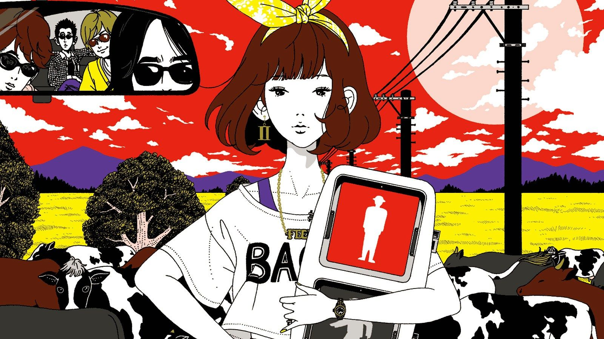

Let’s explore the colorful worlds of Yusuke Nakamura, one of Japan’s most popular modern illustrators!
Over his 15 years as a professional illustrator, Yusuke Nakamura (中村佑介 Nakamura Yusūke) has worked on dozens of projects, creating pictures for book covers, postcards, calendars, and even candy packaging. Outside of Japan, he’s best known as the artist behind J-rock group Asian Kung-Fu Generation’s iconic album covers, and as a character designer for The Tatami Galaxy and The Night Is Short, Walk On Girl.
During his first years at Osaka University of Arts, Yusuke Nakamura struggled to form his own artistic identity. His early pieces were simplistic in terms of color and composition and usually featured young Japanese women, a nod to his main influences, Yumeji Takehisa and Seiichi Hayashi. Both artists specialized in creating bijin-ga (美人画), or pictures of beautiful women.
However, like any other trend, traditional bijin-ga had long gone out of style by
Nakamura’s college enrollment. His plain girls and black-and-white palette were a far
cry from what was popular among his peers. At the suggestion of his classmates, he
decided to look elsewhere for inspiration.
In time, he came across the work of Norman Rockwell, the famous American painter.
When he studied Rockwell’s pictures, Nakamura realized each one told a hidden story
that couldn’t be seen in just a quick glance. Small details that seemed unimportant at
first hinted at something bigger going on behind the scenes.
Nakamura was absolutely blown away. As a design student, he always thought strictly
following the elements and principles of design were what made pictures great. But
Rockwell’s work wasn’t powerful because of its technical achievements, but because of
its striking approach to visual storytelling.
Nakamura’s art went through a dramatic shift soon after. Taking cues from Rockwell,
he brought new personality to his illustrations, pulling his subjects out of their
static scenes and into more dynamic situations.
Gone too were the monochromatic color schemes, gradually replaced by bolder hues
meant to evoke emotion. As Nakamura explained in his lecture, he’s a true believer in
color psychology. Smart designers know how color choice influences both the feel of a
picture and the person viewing it. By taking the time to study color theory, Nakamura
added another emotional dimension to his artwork.
Other thematic elements quickly worked their way to become Nakamura’s hallmarks.
His collaged use of organic and geometric shapes, particularly motifs taken from
Japanese culture, can be found throughout his illustrations. Symbolism plays a part as
well. Nakamura is fond of using animals to represent abstract ideas of people, places,
or other things.
By the time Yusuke Nakamura finished college in 2000, he already had some
commercial illustration work under his belt, mostly projects for student clubs and
local events. His big break came in 2002 when up-and-coming musical groups
Gentouki and Asian Kung-Fu Generation both tapped him to design album artwork for
their CDs. Nakamura still collaborates with both bands to this day.
After his debut, things really got rolling. From 2005 to 2012, Nakamura worked as art
director for Shogakukan’s Qui! La! La! literary magazine. His original character Kirara-chan,
a charming idol-like girl, graced many of the publication’s covers during his tenure.
In 2010, anime film director Masaaki Yuasa approached Nakamura to design the lead
characters for his upcoming series, The Tatami Galaxy. Inspired by Nakamura’s
illustrations for the original Tomihiko Morimi novel, Yuasa felt the artist’s retro-cool
style paired nicely with his own aesthetic vision for the show. The duo would later
work together again for Yuasa’s feature film, The Night Is Short, Walk On Girl.
In between his larger projects, Yusuke Nakamura has worked on many other creative
assignments. He’s illustrated textbooks for Japanese high school programs, designed
packaging for sweets, including Choco Pies, and most recently partnered with
Turner Color Works to produce a new line of acrylic gouache paints.
No matter the commission or client, Yusuke Nakamura makes sure his work stays true to his artistic vision. He currently dubs his style as “modern Japonism” — nostalgic imagery executed with a forward-thinking approach. His work is all about finding the balance between the new and the old. That’s why, among bright colors and intricate linework, you’ll almost always find elegant girls as his subjects, a throwback to his bijin-ga days.